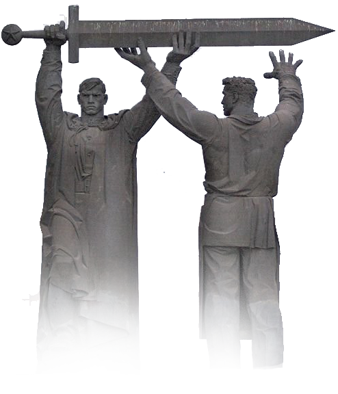

Великая Отечественная война
Великая Отечественная война (22 июня 1941 года — 9 мая 1945 года) — война Союза Советских Социалистических Республик против вторгшихся на советскую территорию нацистской Германии и её европейских союзников (Венгрии, Италии, Румынии, Словакии, Финляндии, Хорватии). Важнейшая составная часть Второй мировой войны, завершившаяся победой Красной Армии и безоговорочной капитуляцией вооружённых сил Германии. В западных странах именуется «Восточным фронтом», в Германии — также «Немецко-Советской войной». Военно-политическое руководство Третьего рейха, рассчитывая на стратегию молниеносной войны («блицкриг»), подготовило план агрессии против Советского Союза, получивший кодовое именование «Директива № 21. План „Барбаросса“». В войне против СССР ставилась цель ликвидировать советское государство, завладеть его богатствами, физически истребить основную часть населения и «германизировать» территорию страны вплоть до Урала. Для советского народа Великая Отечественная война стала справедливой войной за свободу и независимость его Родины. В ходе войны Советский Союз в составе антигитлеровской коалиции нанёс наибольший ущерб вооружённым силам Германии и её европейских союзников, изгнал захватчиков со своей территории и освободил от нацизма страны Центральной и Восточной Европы, тем самым сыграв решающую роль в его разгроме в Европе. Нюрнбергский трибунал, состоявшийся в 1945—1946 гг., дал оценку развязанной нацистской Германией агрессивной войне против всего мира, военным преступлениям, преступлениям против мира и человечности, а также вынес приговор нацистским преступникам, стремившимся к мировому господству.
(30 сентября 1941 года — 20 апреля 1942 года)
— боевые действия советских и немецких войск на московском направлении. Делится на 2 периода: оборонительный (30 сентября — 4 декабря 1941 года) и наступательный, который состоит из двух этапов: контрнаступления (5 декабря 1941 года — 7 января 1942 года) и наступления советских войск (7 января — 30 марта 1942 года). В западной историографии битва известна как «Операция Тайфун». Сражение развернулось на пространстве, границы которого на севере проходили по реке Волге от Калязина до Ржева, на западе — по рокадной железнодорожной линии Ржев — Вязьма — Брянск, на юге — по условной линии Ряжск — Горбачёво — Дятьково. На оборонительном этапе сражения были проведены: Орловско-Брянская, Вяземская, Можайско-Малоярославецкая, Калининская, Тульская, Клинско-Солнечногорская и Наро-Фоминская фронтовые операции. 5 декабря 1941 года Красная армия перешла в контрнаступление по всему фронту под Москвой, проведя при этом ряд успешных фронтовых наступательных операций и отбросила врага на 150—300 километров от столицы.
(5 июля — 23 августа 1943 года)
— совокупность стратегических оборонительной (5—23 июля) и наступательных (12 июля — 23 августа) операций с целью сорвать крупное наступление сил вермахта и разгромить его стратегическую группировку. По своим масштабам, задействованным силам и средствам, напряжённости, результатам и военно-политическим последствиям является одним из ключевых сражений Второй мировой войны и Великой Отечественной войны. В историографии считается самым крупным (величайшим) танковым сражением в истории. В нём участвовали около 2 млн человек, 6 тысяч танков, 4 тысячи самолётов; сражение проложило «путь к великим советским наступательным действиям 1944-45 годов». После завершения битвы стратегическая инициатива окончательно перешла на сторону Красной армии, которая продолжала освобождать страну от немецких захватчиков и до окончания войны проводила в основном наступательные операции. Вермахт в ходе отступления с территории СССР проводил политику «выжженной земли».
(10 июля 1941 года - 9 августа 1944)
— боевые действия войск СССР по обороне Ленинграда против вооружённых сил Германии и Финляндии. Длилась с 10 июля 1941 года по 9 августа 1944 года. Сражения происходили в Ленинградской области, Эстонской ССР, на западе Калининской области и на юге Карело-Финской ССР. Против СССР наряду с войсками Германии и Финляндии принимали участие военнослужащие Испании в составе голубой дивизии и части итальянских ВМС, действовавших на Ладожском озере. К началу битвы в войсках Северного и Северо-Западного фронтов и на Балтийском флоте насчитывалось 540 тыс. человек, 5000 орудий и минометов, около 700 танков (из них 646 легких), 235 боевых самолетов и 19 боевых кораблей основных классов. У противника было 810 тыс. человек, 5300 орудий и минометов, 440 танков, 1200 боевых самолетов. Группа армий «Север» к началу наступления на Ленинград имела превосходство над войсками Сев.-Зап. фронта по пехоте — в 2,4, орудиям — в 4, миномётам — в 5,8, танкам — в 1,2, самолётам — в 9,8 раза. К концу сентября 1941 года фронт на юго-западных и южных подступах к Ленинграду стабилизировался. План врага по захвату Ленинграда с ходу потерпел крах, а это повлекло за собой и срыв намерений противника повернуть основные силы группы армий «Север» для наступления на Москву.
(16 апреля 1945 - 2 мая 1945)
— завершающая часть Берлинской наступательной операции 1945 года, в ходе которой Красная армия завладела столицей нацистской Германии. Операция продолжалась с 25 апреля по 2 мая. В 12 часов дня 25 апреля 6-й гвардейский мехкорпус 4-й гвардейской танковой армии 1-го Украинского фронта форсировал реку Хафель и соединился с частями 328-й дивизии 47-й армии 1-го Белорусского фронта, замкнув тем самым кольцо окружения вокруг Берлина. К исходу 25 апреля гарнизон Берлина оборонялся на площади около 327 км². Общая протяжённость фронта советских войск в Берлине составляла около 100 км. К вечеру 28 апреля части 3-й ударной армии 1-го Белорусского фронта вышли в район рейхстага. В ту же ночь для поддержки гарнизона рейхстага был сброшен на парашютах десант, состоящий из курсантов морского училища Ростока. Это была последняя заметная операция люфтваффе в небе над Берлином. В ночь на 29 апреля действиями передовых батальонов 150-й и 171-й стрелковых дивизий под командованием капитана С. А. Неустроева и старшего лейтенанта К. Я. Самсонова был захвачен мост Мольтке через реку Шпрее. На рассвете 30 апреля штурмом ценой немалых потерь было захвачено здание министерства внутренних дел. Путь на рейхстаг был открыт. Попытка взять рейхстаг с ходу оказалась неудачной. Здание защищал 5-тысячный гарнизон. Перед зданием был вырыт противотанковый ров, заполненный водой, что затрудняло лобовую атаку. На Королевской площади не оказалось артиллерии крупного калибра, способной сделать бреши в его мощных стенах. Несмотря на большие потери, все, способные атаковать, были собраны в сводные батальоны на первой линии для последнего решающего броска. 30 апреля 1945 в 21 час 45 минут части 150-й стрелковой дивизии под командованием генерал-майора В. М. Шатилова и 171-й стрелковой дивизии под командованием полковника А. И. Негоды овладели первым этажом здания рейхстага. Потеряв верхние этажи, гитлеровцы укрылись в подвале и продолжали сопротивление. Они рассчитывали вырваться из окружения, отрезав находившихся в рейхстаге советских солдат от основных сил. Ранним утром 1 мая над рейхстагом был поднят штурмовой флаг 150-й стрелковой дивизии, однако бой за рейхстаг продолжался ещё весь день и только в ночь на 2 мая гарнизон рейхстага капитулировал.

Застывшая история
 Могила Неизвестного Солдата в Москве
Могила Неизвестного Солдата в МосквеСюда перенесли прах неизвестного солдата, погибшего зимой 1941 года на 40-м километре Ленинградского шоссе при обороне Крюково. Тогда врага отбросили от столицы. Авторами памятника Могила неизвестного солдата стали Николай Томский, Юрий Рабаев и Дмитрий Бурдин. На надгробной плите символическая скульптурная композиция: лавровая ветвь и солдатская каска на ниспадающем тяжелыми складками знамени. В центре мемориала — ниша с надписью: «Имя твое неизвестно, подвиг твой бессмертен». Автор этих строк — Сергей Михалков. Ниша сделана из лабрадорита с бронзовой пятиконечной звездой, в центре которой горит вечный огонь. Факел для могилы неизвестного солдата у кремлевской стены зажгли от вечного огня на Марсовом поле в Ленинграде. Факел доставили по эстафете, причем на всем пути ее следования стоял живой коридор — люди считали своим долгом отдать дань памяти всем погибшим в войне. Делегацию возглавлял легендарный летчик Второй Мировой войны Алексей Маресьев. У создателей вечного огня в Москве были две задачи.Во-первых, высокое пламя должно было переливаться белым, желтым и красным. Во-вторых, огонь должен был гореть постоянно. Разноцветия добились при неправильном сгорании газа, когда образуется нехватка воздуха. В этом случае рождаются струи разных цветов. А чтобы поддерживать горение, для факела сделали систему защиты, гарантирующую его безотказность при дожде, ветре и снегопадах.
"Городом-Героем" Ленинград впервые был назван в Приказе Верховного Главнокомандующего от 1 мая 1945 года. Но официально звание было присвоено спустя 20 лет в соответствии с Положением о высшей степени отличия — звании "Города-Героя", утверждённом Президиумом Верховного Совета СССР 8 мая 1965 года. Ещё через 20 лет был воздвигнут Обелиск Городу-Герою Ленинграду. Звание Города-Героя Ленинграду было присвоено в 1965 году. В 1985 году 8 мая в честь 40-летия Победы на Площади Восстания был открыт обелиск Городу-Герою Ленинграду. Мемориал представляет собой вертикальный гранитный монолит общей высотой 36 метров, увенчанный "Золотой Звездой Героя". Его украшают бронзовые горельефы, в нижней части видны изображения важных событий в жизни Ленинграда — "Блокада", "Тыл — фронту", "Атака", "Победа". На декоративном картуше расположен Орден Ленина и надпись: "Городу-Герою Ленинграду". По величине обелиск является в Санкт-Петербурге второй памятной доминантой после Александровской колонны на Дворцовой площади.
Обелиск Городу-герою высотой 43 метра установлен на площади Победы в 1982 году, в честь присвоения Киеву звания Город-герой в 1961 году. Обелиск облицован белым мрамором. Его вершину венчает золотая звезда. В нижней части обелиска расположены награды, которые присваивали Городам-героям: орден Ленина и медаль Золотая звезда. Архитекторы — В. Лашко и Л. Семенюк.
Символом города-героя Керчи стал Обелиск Славы на горе Митридат. Монумент посвящён павшим в сражениях за освобождение Крыма в период с ноября 1943 года по апрель 1944 года. Открытый 8 августа 1944 года мемориал стал первым памятником Великой Отечественной войны на территории СССР. Памятник представляет собой трёхгранный обелиск из светло-серого камня высотой 24 метра. Рядом на постаменте расположены три 76-мм пушки и большая мемориальная доска в виде развёрнутой книги.
 Мемориал «Защитникам Советского Заполярья в годы Великой Отечественной войны» в Мурманске
Мемориал «Защитникам Советского Заполярья в годы Великой Отечественной войны» в МурманскеМемориал «Защитникам Советского Заполярья в годы Великой Отечественной войны» («Алёша») — мемориальный комплекс в Ленинском округе города Мурманска.Основной в мемориале является фигура солдата в плащ-палатке, с автоматом за плечом. Высота постамента памятника — 7 метров, высота статуи — 35,5 метра. Высота же всего монумента 42 метра, вес полой внутри скульптуры более 5 тысяч тонн.Памятник относится к одним из высочайших памятников России. Сравнение высочайших памятников России Взгляд воина устремлен на запад, в сторону Долины Славы, где во время Великой Отечественной войны проходили наиболее ожесточённые бои на подступах к Мурманску. Перед монументом располагается подиум «Вечный огонь», который был выполнен из блоков природного камня чёрного цвета. Чуть выше, рядом с фигурой солдата — покатая трёхгранная пирамида. По замыслу авторов — это приспущенное в знак скорби по павшим воинам боевое знамя. Рядом с ней находится стела из полированного гранита с надписью: « Защитникам Заполярья — воинам 14-й армии, 19-й армии, Краснознаменного Северного флота, 7-й воздушной армии, пограничных отрядов № 82, 100, партизанских отрядов «Советский Мурман», «Большевик Заполярья», «Полярник», «Сталинец», «Большевик». Слава отстоявшим эту землю! » Чуть в стороне от монумента находятся два зенитных орудия. Во время боевых действий на этой вершине находились зенитные батареи, прикрывавшие с воздуха город Мурманск. У подножия памятника замурованы две капсулы. Одна с морской водой с места героической гибели легендарного корабля «Туман», другая — с землёй из Долины Славы и из района боёв на рубеже Верман. Широкая центральная лестница ведет к трибуне для почётных гостей, присутствующих при проведении официальных церемоний. Завершает комплекс открытая в 2004 году аллея памятных плит городов-героев.
Монумент Победы — монумент-обелиск в столице Беларуси городе Минске в честь победы в Великой Отечественной войне и в память о воинах Советской армии, партизанах и подпольщиках, погибших в годы Великой Отечественной войны. Монумент является одним из символов столицы Беларуси, а также местом проведения различных мероприятий в честь победы в Великой Отечественной войне. Ежегодно, 9 мая, в День Победы Советской армии и советского народа над нацистской Германией в Великой Отечественной войне 1941—1945 годов, проходит церемония возложения венков к Монументу Победы, в которой принимают участие высшие должностные лица Республики Беларусь и г. Минска, ветераны Великой Отечественной войны, делегации, представители дипломатического корпуса, воспитанники довузовских образовательных учреждений Министерства обороны. Венки к Монументу Победы также возлагаются ко Дню Независимости Республики Беларусь. В ходе государственных и официальных визитов в Республику Беларусь среди протокольных мероприятий обязательно предусматривается церемония возложения венка к Монументу Победы в г. Минске. Монумент Победы установлен в 1954 году посредине площади Победы (арх. Г. Заборский, В. Король). Торжественное открытие памятника было посвящено 10-й годовщине освобождения Беларуси от оккупационных немецких войск. У подножия памятника 3 июля 1961 года, в день 17-й годовщины освобождения города Минска, почётный гражданин города Минска, Герой Советского Союза генерал-полковник А. С. Бурдейный зажёг вечный огонь.
Площадь Победы. Мемориал героическим защитникам Тулы. Открытие памятника состоялось 16 октября 1968 года. Авторы: скульптор Борис Иванович Дюжев и архитекторы Григорий Ефимович Саевич и Николай Николаевич Миловидов. Именно здесь осенью-зимой 1941 года проходил передний край обороны Тулы. Мемориальный комплекс включает в себя: три обелиска-штыка высотой 51 м, 41 м, 31 м, имеющих трехгранную форму. По одной из версий, они символизируют три поколения туляков, защищавших город во время обороны: деда, отца и сына; у подножия штыков защищенный бронзовыми решетками постоянно горит Вечный огонь, скульптурную группу: солдат 50-й армии и ополченец тульского рабочего полка, в руках у которого знаменитый ППШ - пистолет-пулемет Шпагина; 13 стел, 12 из которых посвящены городам-героям и 1 крепости-герою Бресту, а также 4 стелы, посвященные воинским частям и соединениям, оборонявшим Тулу в 1941 году. Мемориал героическим защитникам Тулы является объектом культурного наследия федерального значения.
Смоленская крепостная стена, здание кинотеатра «Октябрь», уютный сквер в самом сердце города. Высокий обелиск памятника воинам, защитникам и освободителям Смоленска издалека привлекает внимание смолян и гостей нашего города, а удобные лавочки , прекрасно оформленные клумбы и вид на крепостную стену - сделали сквер одним из любимых мест встреч среди смоленской молодежи. Место установки памятника воинам, защитникам и освободителям Смоленска выбрано довольно символично — им стало площадь Победы. Памятник представляет из себя высокий серый обелиск, окруженный фигурами трех воинов-защитников Смоленска: эпохи русско-польской войны, Отечественной войны 1812 года и Великой Отечественной войны 1941-1945 годов. В руках у воинов, помимо оружия, букеты цветов, которые они держат высоко над головой. Этот жест, по замыслу автора, подчеркивает, тот факт, что во все времена наших русских воинов-освободителей с радостью встречали в Смоленске. Фигуры воинов, отлитые в бронзе, установлены на постаменте из красного гранита, что символизирует смоленскую землю, пропитанную кровью ее защитников... На каждой из трех сторон пьедестала установлены информационные таблички, сообщающие о военных действиях, проходивших на территории Смоленской области. Верхушка обелиска увенчана лавровым венком, а подножие пьедестала украшают дубовые венки. Общая высота памятника составляет 13 метров, высота фигур – 2,7 метров. В вечернее время на обелиске включается подсветка. Идея создания памятника, а также окончательный выбор проекта памятника принадлежат ветеранам Великой Отечественной войны. Автор проекта — белорусский скульптор Игорь Чумакова. Ему же принадлежит авторство таких известных смоленских достопримечательностей, как: памятник Юрию Никулину в Демидове и памятник Анатолию Папанову в Вязьме. Торжественное открытие памятника воинам, защитникам и освободителям Смоленска состоялось 8 мая 2015 года.
Памятник освободителям Новороссийска Один из известнейших монументальных ансамблей мы увидим в историческом сердце Центрального р-на Новороссийска – в мини-сквере площади Свободы. Последний являет собой фрагмент парка имени Пушкина, зажатого двумя линиями улицы Советов. Приезжим понадобится ост. «Центральный рынок», через которую следует половина новороссийского транспорта. «Освободители» появились в 1961 г. – это три бронзовые фигуры, сливающиеся издалека в общий силуэт. Сюжет композиции – матрос, солдат с флагом и молодая женщина-партизанка. Каждый символизирует определенный «род» бойцов. Постамент выполнен из диорита. На нем – барельефы, изображающую высадку десанта (с этого события началось Освобождение). Памятник высотой с 3-этажный дом.
Памятник Неизвестному солдату Овидиопольская дорога, 3 (Селекционный институт) Недалеко от центральной аллеи и памятника И.В. Мичурину, в 20-ти метрах от мемориальной доски с именами погибших на фронтах Великой Отечественной войны сотрудников селекционного института находится могила неизвестного солдата — памятник неизвестному солдату. Сколько их, неизвестных, из разных уголков Советского Союза, зачастую никогда не видивших моря, захоронено (и захоронено ли?) под Одессой? Без пафосных громких слов над своим последним пристанищем спит вечным сном рядовой советской армии... Только несколько слов на благодарственной плите...
Историко-мемориальный комплекс «Мамаев курган» в Волгограде
Мамаев курган — место, которое самым непосредственным образом связано с событиями II Мировой войны, с периодом Сталинградской битвы. 140 дней и ночей войска 62-й армии под командованием В. И. Чуйкова (13, 52 гвардейские стрелковые дивизии, 95, 112, 284 дивизии, 10 дивизии войск НКВД и др.) стояли насмерть на склонах Мамаева кургана, занимавшего ключевую позицию в боях за Сталинград. Поэтому, кто владел курганом в то время, тот владел и городом. Вот почему, удержать эту высоту в своих руках было вопросом жизни или смерти. О том, какой ожесточенный характер носили бои за эту высоту, подтверждает тот факт, что сразу после битвы на каждом квадратном метре земли Мамаева кургана обнаруживали от 500 до 1250 осколков от снарядов. Весной 1943 года не зеленела здесь даже трава. Создавая известный мемориал, авторы стремились воссоздать образы героических защитников Отечества, сделать очевидным для потомков их огромное желание победить; ощутить на себе атмосферу боевых действий великой битвы на Волге, дать возможность современнику почувствовать себя участником Сталинградской битвы. Мемориальный комплекс представляет собой ряд архитектурно-пространственных звеньев, как бы нанизанных на единую ось. По мере поднятия на курган, перед взором открываются все новые и новые элементы и композиции мемориала. Он представляет собой высшую форму монументального искусства. В основном все скульптурные композиции выполнены в железобетоне. Тротуары и площади замощены гранитом. Вода в бассейнах символизирует великую русскую реку Волгу.
Композиционным центром комплекса является скульптура «Родина-мать зовет!». Статуя господствует над городом и видна на десятки километров. Величественный монумент создавался в течение трех лет. По первоначальному проекту холм должна была венчать двухфигурная композиция: Родина-мать со знаменем Победы в правой руке и снопами колосьев в левой и солдат с автоматом, преклонивший колени и целующий колосья. Потом авторский замысел изменился. Ведь несмотря на то, что победа под Сталинградом знаменовала собой коренной перелом в ходе Великой Отечественной войны, до окончательной победы было еще далеко. Автор комплекса Евгений Вучетич продолжал творческий поиск, и в конце концов появилось новое решение — динамичная, порывистая фигура женщины с высоко поднятым мечом в правой руке. Левой рукой она указывает на запад, в стремительном движении призывая своих сыновей и дочерей на новые ратные подвиги до полной и окончательной победы над врагом. Суровое волевое лицо, развевающиеся на ветру волосы и одежда — все это олицетворяет непреодолимую силу, экспрессию и страстный призыв к наступлению, к освобождению своего Отечества. По словам члена авторского коллектива заслуженного архитектора Ф. М. Лысова, «новое предложение явилось логичным, высоко эмоциональным завершением того героического пафоса, которым насыщены все скульптурные композиции комплекса». Общая высота скульптуры с мечом - 85 метров. Общий вес сооружения - 8 тыс. тонн. Одна из самых высоких статуй в мире «Родина-мать зовет!» входит в скульптурный триптих вместе с монументами «Тыл — фронту» в Магнитогорске и «Воин-освободитель» в Трептов-парке в Берлине. Автором памятника был Евгений Вучетич, который создал фигуру женщины с поднятым над головой мечом. Сложнейшее строительство шло в период с 1959 по 1967 год. Для изготовления памятника понадобилось 5,5 тысячи тонн бетона и 2,4 тысячи тонн металлических конструкций. Внутри «Родина-мать» абсолютно полая, она состоит из отдельных камер-ячеек, в которых натянуты металлические тросы, поддерживающие каркас памятника. Высота грандиозного монумента — 85 метров, он занесен в Книгу рекордов Гиннесса как самая большая скульптура-статуя в мире на момент строительства памятника.

Памятник «Тыл—фронту» в городе МагнитогорскеМонумент посвящен подвигу труженикам тыла. По статистике из магнитогорской стали был сделан каждый третий снаряд, а в магнитогорскую броню был «одет» каждый второй танк. Отсюда и символичность монумента: работник завода передает выкованный меч солдату, который отправляется на войну. На берегу реки Урал стоят две внушительные гранитные фигуры. Рабочий передает солдату меч для борьбы с немецкими захватчиками. Высота фигур около 15 метров. Здесь же горит вечный огонь из гранитной звезды-цветка. Монумент дополняется двумя трапециями высотой в человеческий рост, на которых барельефом написаны имена магнитогорцев, получивших звание Героя Советского Союза в Великой Отечественной войне. 9 мая 2005 года состоялось открытие ещё одного дополнения, выполненного в виде двух треугольных секций, симметрично заполненных возвышениями из гранита, на которых высечены имена магнитогорцев, погибших в Великой Отечественной войне (всего более 14 000 фамилий). Монумент был открыт в 1979 году. Его появление было приурочено к 50-летнему юбилею города. Специально для монумента «Тыл — Фронту» на берегу реки Урал был сооружен 18-метровый холм, а его основание закреплено железобетонными сваями. Сам памятник после его проектной разработки начали изготавливать на Ленинградском заводе монументальных скульптур. В строительстве главного памятника Магнитогорска принимали участие очень многие организации города, а ученые МГМИ — ныне МГТУ — изобрели специальный метод резки крупногабаритного камня, который применили при обработке глыбы для изготовления звезды Вечного огня, являющегося составной частью монумента. Магнитогорский памятник «Тыл — Фронту» был первым масштабным монументом, возведенным в СССР в честь подвига работников тыла. Над реализацией проекта памятника работал известный скульптор Лев Головницкий. Архитектором и руководителем авторского коллектива, создававшего памятник, был лауреат Ленинской премии Яков Белопольский.
Монумент памяти павших земляков торжественно открыт 9 мая 1985 года, а пламя вечного огня для великого памятника было взято в городе-герой Волгоград. 1 ая 1985 года в 9 часов утра, получив напутствие генерального директора Сахапова Г.З п/о «Нижнекамсккнефтехим» отправился в путь авто-мотациклетный отряд. Доехав до Волгограда, участники посетили Мамаев Курган. Директором памятника, Пекарским Т.Р., генерал-майором в отставке, была подарена священная земля и засыпаны в капсулы, которые специально изготовили работники ремонтно-механического цеха объединения. Затем участники пробега посетили зал воинской славы, где горит вечный огонь, Пекарский Т.Р. – директор мемориала взял пламя и зажег факел, далее пламя огня поместили в керосиновую лампу, которая была названа «Летучая мышь». «Летучая мышь» была доставлена в город Нижнекамск участниками авто-мотопробега 9 мая 1985 года. Право зажжения вечного огня было дано Герою Социалистического труда Королеву Е.Н. Монумент победы является самым первым и самым главным местным памятником, посвященный победе в Великой Отечественной войне и памяти павших. Огонь на памятнике горит и по сей день, не потухая ни на минуту. В верхней части- Орден Победы, он вручную выполнен народными умельцами. В нижней части гранитный постамент из красного гранита. В бронзовой чаше зажжен Вечный огонь как символ нашей вечной памяти о тех далеких событиях. На гранитных плитах увековечены имена героев Советского Союза и полных кавалеров Ордена Славы.

Герои победы

Попов Илья Федорович
Был призван в армию 1942 года с 9 –го класса. Илья попал в Саранское пехотное училище. Через три месяца присвоили звание «сержант» и направили в действующую армию. В середине августа 1942 года Илью направили на защиту Сталинграда. Награжден орденом «Отечественной войны 1-ой степени», медалями «За отвагу», «За оборону Сталинграда»,«60 лет Сталинградской битвы» и несколькими юбилейными медалями.

Галиуллин Хадиулла Валиуллович
В январе 1943 года был призван на войну. С 1943 года по 1946 год он служил в отдельном стрелковом батальоне . Награжден медалью « За победу над Германией в 1941- 1945 гг.» и множеством юбилейных медалей.

Гордеев Иван Евдокимович
Награжден орденами « Красного знамени», «Отечественной войны 2–ой степени », двумя орденами «Красной Звезды», медалью «За боевые заслуги», медалью « За победу над Германией 1941-45г. г. и Японией», медалями «Жукова», медалью Китайской Народной Республики, медалью Корейской Народной Демократической Республики, многими юбилейными медалями.Он – Ветеран Вооруженных сил СССР.

Якупов Махмут Марданшович
В 1939 году Махмут был призван в Красную Армию. Его направили в Тбилисское артиллерийское училище, оттуда - в авиационное училище в г. Грозный. Закончив его, он продолжил обучение в артиллерийском училище г. Паку, где учился до мая 1943 года. Махмут участвовал в военных действиях в составе 1275 стрелкового полка 387 стрелковой дивизии четвертого Украинского фронта с 7 июля по 9 августа 1943 года в должности командира огневого взвода. После тяжелого ранения до июня 1947 года он служил в артиллерии. Награжден орденом «Красной звезды», орденом «Отечественной войны 2–ой степени », многими юбилейными медалями.
Шаркова Татьяна Филипповна
15 июля 1943 года была призвана в РККА. До демобилизации из армии она служила в 150 –ом полку войск НКВД. В 1945 году работала на военном заводе в городе Горьком, она ветеран, участник Великой Отечественной войны. Награждена медалью «За победу над Германией в 1941 - 1945гг.» и несколькими юбилейными медалями.

Холин Михаил Вениаминович
В 1944 году его мобилизовали в армию. С 11 ноября 1944 года по октябрь 1945 года был участником СПС (секретной части). С марта 1944 года по апрель 1951 года служил в этой части, а в апреле 1951 года он демобилизовался из армии. Михаил Вениаминович награжден медалью «За победу над Японией», и другими юбилейными медалями в честь юбилеев армии и флота.
Хисамутдинов Рифкат Мифтахович
10 сентября 1942 года был призван в ряды Красной Армии. До марта 1943 года был курсантом 26 снайперского полка. По 1945 год – помощником командира взвода 84 –го запасного стрелкового полка. С декабря 1945 года по июнь 1946 года служил помощником командира в 470 стрелковом полку, до 1947 года – в 159 отдельном батальоне. Демобилизовался из армии в марте 1947 года в звании « старший сержант». Он награжден медалью «За победу над Германией в 1941 -1945 г.г.» и несколькими юбилейными медалями.

Павлов Андрей Яковлевич
10 сентября 1942 года Андрей был призван а в армию. Он служил в 13 -0й стрелковой дивизии старшим пулеметчиком до февраля 1943 года. Участвовал в Великой Отечественной войне в составе 13 – ой и 15 – ой стрелковой дивизии. В 1943 году Андрей Яковлевич получил тяжелое ранение в шею и находился на лечении в течение 3 – х месяцев. После госпиталя он был направлен в воинскую часть города Коврова, в которой прослужил до демобилизации. Награжден орденом «Отечественной войны 2–ой степени », медалями « За победу над Германией 1941-45 г. г.», медалью «Маршала Жукова» и многими юбилейными медалями.

Студенкова Екатерина Андреевна
В мае месяце 1943 года её призвали на войну. Екатерина служила в зенитно –артиллерийском полку связисткой – телефонисткой 2-го Белорусского фронта. В августе месяце 1945 года её демобилизовали из армии. В 1945 году Екатерину Ивановну наградили медалью «За победу над Германией 1941-1945 гг.» , у неё множество юбилейных медалей, имеет медаль участника войны.